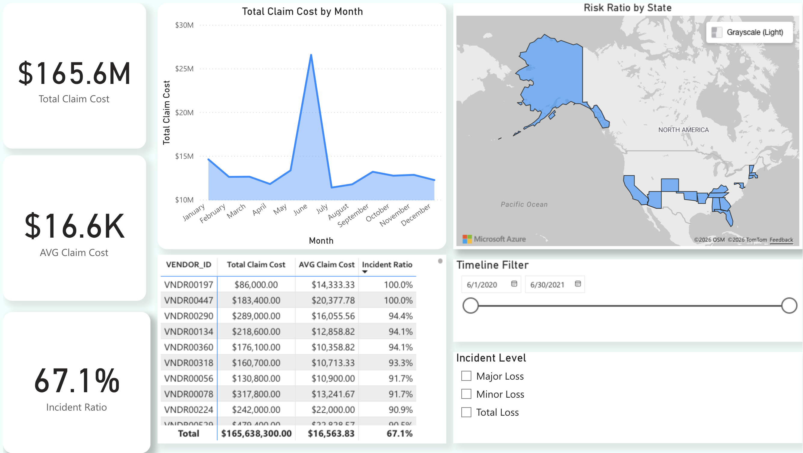
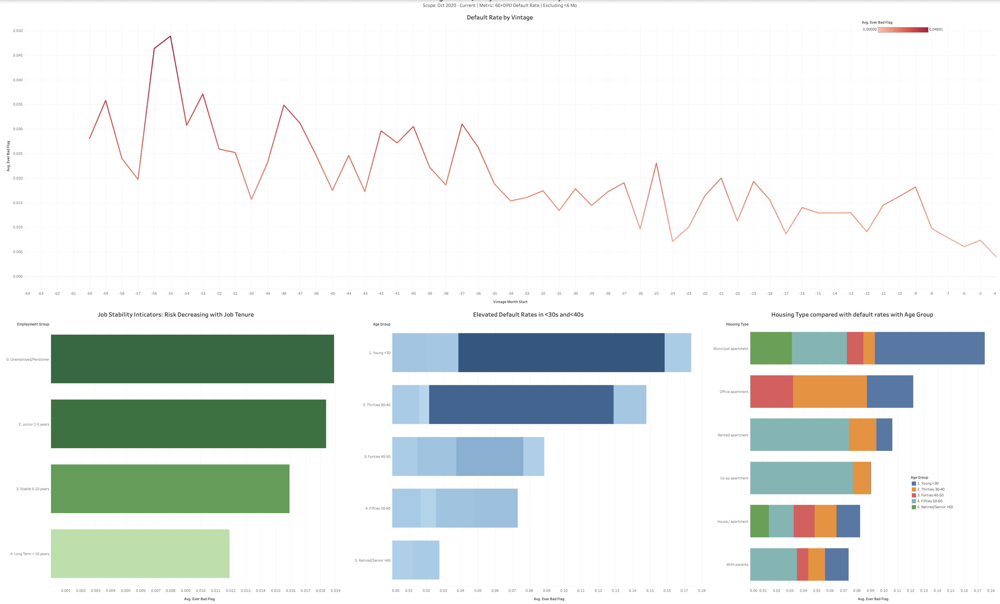
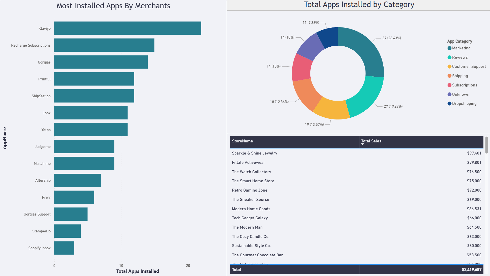
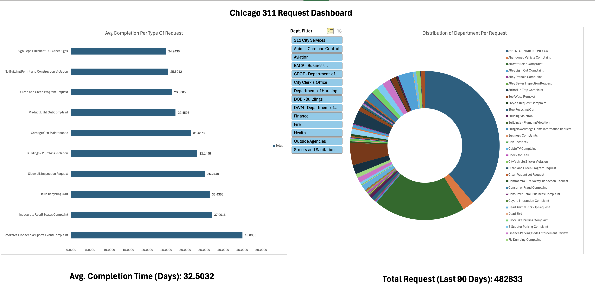

Information & Decision Sciences | UIC (Graduated Dec 2025)
Hi, I recently graduated from UIC with a degree in Information & Decision Sciences.
My focus is on Data Analysis and Business Intelligence. Below are a few projects I've worked on to practice my technical skills and solve specific business problems in Finance, E-commerce, Insurance, and more.
The Goal: To reduce financial "leakage" by spotting outlier claims early.
Why It Matters: If a specific vendor's average claim cost is significantly higher than the benchmark, the Claims Manager needs to know immediately. This dashboard is important because it highlights these "Major Loss" events, allowing the company to audit those specific vendors and save costs.
What I Built: I connected three datasets in Power BI to create a fraud-detection dashboard. I created a "Risk Flag" for vendors that consistently appear in the high-cost categories. The dashboard allows you to filter by "Major vs. Minor" loss and uses a timeline slider to narrow down the data range to find specific patterns.
Tools: Power BI, DAX, Power Query
The Goal: To track loan performance by "Vintage" (origination month) because looking at total portfolio averages often hides rising risk trends.
Why It Matters: If loans issued to specific vintages are being defaulted at a significant rate compared to others, then that should be further looked into. The bank needs to tighten its lending policy now to prevent future losses.
What I Built: I migrated a local credit pipeline from DBeaver to Snowflake. I then connected it to Tableau to visualize delinquency rates (30/60/90 days past due) by origination month. I also broke down the risk by demographics like housing history and age groups.
Tools: Snowflake, SQL, Tableau
The Goal: To determine which app combinations lead to higher revenue, helping new merchants avoid "analysis paralysis."
Why It Matters: New business owners often guess at what software they need. This analysis matters because it uses data to prove which tools are actually worth the investment. For Shopify, this is key data to drive a "bundling" strategy that increases app sales.
The Insight: The data showed that successful merchants typically use a specific combination of apps (Marketing + Inventory + Loyalty). My recommendation is that Shopify should bundle these into a "Starter Package" to increase software revenue for the platform while boosting success rates for new business owners.
Tools: Power BI, DAX
The Goal: To find out what city services are lagging behind compared to others.
Why It Matters: This analysis is useful for City Planners to re-allocate maintenance crews to neglected services and areas, ensuring that all services are met in a timely manner.
What I Built: I analyzed 311 data to look for operational inefficiencies. The dashboard visualizes response times by services and zip code, highlighting departments and areas where service delivery is lagging behind the city average.
Tools: Excel, Power Query
